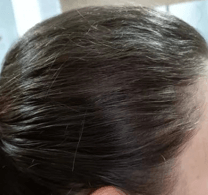

Muitos homens e mulheres sofrem com isso a anos, os cabelos param de nascer e qualquer estresse é fatal. Mas você sabe porque isso acontece? Nesse artigo vou entregar tudo que você precisa saber para resolver seu problema, apresentando as soluções gratuitas e pagas disponíveis no mercado.
Olá, meu nome é Lair Oliveira, Doutor e Tricologista com Pós pela Universidade Johns Hopkins, área especializada em cuidar dos problemas capilares e couro cabeludo.
Todos dias inúmeras pessoas aparecem me procurando sempre com perguntas do tipo: “Doutor, como posso resolver minha queda de cabelo…” ou “Doutor, estou ficando careca… Qual melhor tratamento para meu caso?”.
Infelizmente todas elas estão cometendo o mesmo erro, o maior problema está em querer resolver a queda capilar depois que já caiu boa parte do cabelo. Quando na verdade o certo é perceber que o cabelo está caindo e tomar uma atitude imediatamente. Mas o primeiro passo para resolver o problema é entender porque esse problema está acontecendo com você.
Entenda que a matriz capilar é muito sensível a todos os tipos de alterações no nosso organismo, razão pela qual os maus hábitos alimentares, os problemas hormonais, as infecções, o stress, as anemias e entre outros fatores favorecem a queda do cabelo.
Antes de mais nada, é preciso prestar atenção ao ritmo da queda. Em geral, um adulto perde de 100 a 150 fios por dia, que depois renascem naturalmente. Mas se a quantidade de fios que cai diariamente é claramente maior do que isso e, em consequência, surgem espaços mais visíveis no couro cabeludo, então é conveniente procurar um médico especialista para avaliar melhor a situação (esse é meu e-mail pessoal para tirar dúvidas contatodrlairol@gmail.com).
Porém, se houver apenas um leve aumento na queda dos fios, o mais provável é que seja uma indicação de que você precisa tratar melhor seu cabelo, que deve estar carente de nutrientes e de hidratação, ou então danificado depois de algum tratamento químico mais agressivo. O cabelo pode cair mais até mesmo por fatores emocionais, mas na maior parte dos casos isso ocorre por deficiência de algum nutriente essencial.
Ácido ascórbico: Ajuda na síntese de colágeno e ligação cruzada das fibras de queratina.
Colecalciferol: A falta de Colecalciferol pode causar queda de cabelo, e alguns estudos ainda sugerem a ligação da deficiência de Colecalciferol como uma das causas de alopecia areata. Dessa forma, a suplementação de Colecalciferol é ideal para fortalecer os fios e evitar a perda deles.
Tocoferol: Ajuda a recuperar fios danificados, aumentando a hidratação e favorecendo o crescimento saudável.
Retinol: Consumo excessivo pode resultar na queda de cabelo.
Ferritina: A falta pode acarretar em afinamento e queda dos fios.
Dentre todos, esses nutrientes são os principais quando balanceados em quantidade muito específica para remediar de imediato sua queda capilar.
Mas não existem apenas métodos baseados em nutrientes essenciais para estimular o crescimento capilar, com o avanço da tecnologia e da medicina, atualmente temos uma gama relativamente grande de soluções, dentre elas de custos elevados até algumas gratuitas. Vou abordar as principais soluções existentes no mercado.
O transplante capilar é uma cirurgia minimamente invasiva que visa a implantação de folículos pilosos (estruturas localizadas na pele e de onde nascem os cabelos ou pelos) nas áreas onde não existe cabelo ou onde existe uma menor densidade (vertex do couro cabeludo).
Estes folículos são retirados das áreas onde existe cabelo, habitualmente da região da nuca e das partes laterais do couro cabeludo. Um transplante capilar é efetivamente uma cirurgia que permite transplantar o cabelo de uma área sem predisposição para calvície ou queda de cabelo, para a região afetada pela falta de cabelo.
Particularmente acho uma ótima solução, porém com custo elevado, o que não torna acessível para a grande maioria dos brasileiros, passando facilmente de 15 mil reais o procedimento.
As cápsulas funcionam armazenando nutrientes para os folículos capilares que “prometem“ aumentar a fase de crescimento dos cabelos, e os óleos possuem uma composição rica em vitaminas e minerais, antioxidantes e aminoácidos essenciais que “prometem” o mesmo objetivo.
Mas do meu ponto de vista esse é um dos métodos na qual sou mais cético, devido a várias empresas venderem apenas uma promessa sem resultado. Por isso, é importante verificar se essas “soluções” possuem aprovação da ANVISA e analisar cuidadosamente se existem de fato depoimentos que comprovem a sua eficácia. Devido recentemente aparecer muitos relatos e investigações mostrando o grande risco que esses produtos encapsulados podem trazer a sua saúde e financeiramente.
Outro fator que precisa ser analisado cuidadosamente é os produtos que até conseguem solucionar a queda capilar, mas quando você para de usar, o problema volta muito pior. Porque querendo ou não é meio óbvio, se você não usar para sempre, como essas empresas conseguem lucrar?
Deixo bem claro que não possuo nenhuma prova científica, mas analisei alguns artigos baseados em dados estatísticos usando o óleo de rícino em um grupo de pessoas durante um estudo, e foi observado que ele reduziu a queda e as pontas duplas e ainda criou uma película protetora ao redor dos fios que os deixam mais fortes e protegidos contra ações do ambiente. E por ser altamente nutritivo e estimular a circulação no couro cabeludo, pode ser considerado um estimulante de crescimento capilar natural.
Mas como eu disse, não encontrei nenhuma publicação oficial afirmando que ele é a cura, só dados estatísticos apresentando informações que ele pode ser utilizado como estimulante de crescimento capilar e fonte natural de nutrientes.
Agora que você conhece os métodos disponíveis no mercado deve estar querendo saber, “qual o melhor tratamento para meu caso?”. Infelizmente é preciso fazer uma análise individual de como está a sua situação para decidirmos isso.
Mas gostaria de compartilhar com você algo que descobri recentemente, e que acredito que possa te ajudar com sua queda capilar. Um antigo colega da pós-graduação me contou de um método que se tornou um verdadeiro milagre na Ásia Meridional, utilizado a combinação de uma planta medicinal africana combinada com um ingrediente encontrado na ásia ocidental.
Chamado inicialmente de “baalon ke jhadane ka virodhee” que no portugués pode ser entendido como tratamento para queda capilar. Foi um estudo idealizado pelo Doutor Johar Banerje, que inicialmente começou o estudo com homens que apresentavam o início da calvice.
O primeiro experimento envolveu 20 homens de meia idade que começavam a apresentar falhas nas laterais do cabelo, inicialmente nos primeiros dias o efeito observado foi que parou a queda, mas sem nenhum sinal de nascimento dos novos fios.
Mas após aproximadamente 2 semanas algo fantástico aconteceu, foi observado o nascimento de pelos super finos nos locais onde se encontrava a falha, sendo um resultado extremamente animador.
Em uma entrevista o Doutor Johar Banerje conta que nesse momento uma luz no fim do túnel nasceu para todos envolvidos após muitos anos de pesquisas. O quão incrível seria apresentar esses resultados para inúmeros homens e mulheres que passam por essa situação delicada que afeta extremamente a autoestima de qualquer indivíduo.
Inicialmente era muito incerto se esses novos fios iriam nascer fortes e saudáveis, ou cairiam após algum tempo. Mas na 5° semana o Doutor Johar Banerje conta que os fios estavam ganhando corpo e ótima resistência ao ambiente. E cada dia que passava o resultado era mais animador.
Só existia um único problema até o momento, que é o mesmo que envolve a maioria dos métodos que existem no mercado atualmente… Se o procedimento for interrompido, os fios que nasceram cairiam e o problema retornaria?
Na 8º semana as entradas já estavam cobertas por novos fios, sendo assim, deu início a última fase do estudo e a mais aterrorizante. Todos os doutores e pesquisadores estavam extremamente apreensivos. Se a queda capilar retornasse seria algo extremamente desanimador.
Após iniciar a última etapa de testes com os 20 homens envolvidos no estudo, nos primeiros dias nenhum indivíduo apresentou qualquer fator negativo e foram dispensados por um período de 14 dias.
Quando retornaram ocorreu o maior momento de nervosismo na história daquela equipe de profissionais e especialistas… Será que todo aquele trabalho e tempo investido teriam sido desperdiçados?
Assim que os 20 envolvidos chegaram, iniciou as avaliações individuais, foram retiradas amostras e imagens com super resolução para estudar a estrutura dos fios e sua saúde. Após algumas horas de análises foi constatado o resultado final…
Os fios estavam saudáveis e resistentes, finalmente havíamos descoberto uma forma de acabar com esse problema que destrói a autoestima das pessoas a tantos anos.
Além dessa combinação da planta medicinal africana com o ingrediente da ásia ocidental, foi descoberto outro fator que mantém os fios mais fortes ainda. Os indivíduos que tiveram uma alimentação saudável apresentaram uma saúde dos fios muito melhor e velocidade superior no crescimento.
Particularmente acho isso incrível, e sei que nesse momento você quer saber como funciona essa solução… Tirando os termos complicados e científicos, de forma resumida ela funciona da seguinte forma. Por ser algo que usa uma combinação extremamente rica em nutrientes que agem estimulando a sua produção de colágeno, facilitando o crescimento de novos fios e melhorando a circulação do couro cabeludo, posteriormente ela abre os poros, o que nessas condições consegue fazer com que os novos fios possam crescer mais rápidos e com saúde.
Resumindo, ela estimula o crescimento de novos fios em locais onde parou de nascer, acelerando e fortalecendo o crescimento do seu cabelo.
O método de uso ainda está sendo estudado e desenvolvido no formato de cápsulas, mas atualmente para as pesquisas é usado como uma pasta extraída na mistura dos dois ingredientes considerados mágicos pelos cientistas, e que ainda estão incrédulos por nunca termos percebido o poder medicinal deles quando combinados.
Assim que fiquei sabendo dessa incrível notícia liguei imediatamente para o consultório do Doutor Johar Banerje, mas infelizmente a secretária dele me informou que sua agenda estava sem nenhuma previsão para marcar uma ligação ou vídeo chamada.
Durante o mês de agosto inteiro liguei todo santo dia tentando marcar uma ligação com o Doutor Johar Banerje, até que no dia 3 de setembro para minha surpresa, consegui uma chamada de vídeo com ele.
Nessa ligação expliquei detalhadamente o quanto eu queria saber a fórmula que estavam usando nos estudos para testar com alguns pacientes aqui no Brasil.
Inicialmente ele não aprovou a ideia, já que muitas empresas estão querendo colocar a mão nessa fórmula incrível para revender por uma fortuna. Entendi o lado dele e insisti novamente até que consegui, mas ele só aceitou com uma condição. Eu teria que testar com alguns homens e mulheres aqui do Brasil e repassar para ele análises detalhadas de como foi os resultados, isso tudo com rigoroso sigilo.
Aceitei a proposta e após alguns minutos ele encerrou a ligação falando que a sua assistente iria me enviar o acesso da pesquisa contendo como era feito o procedimento na recuperação de queda capilar.
Após alguns dias recebi um link no meu e-mail contendo todas informações necessárias para iniciar o procedimento. Logo quando apareceu a notificação no meu celular estava um pouco reflexivo, como eu iria conseguir os ingredientes? Por ser necessário uma quantidade muito específica de duas plantas que não são aqui do Brasil.
Mas para minha felicidade, após procurar em casas de produtos naturais e em lojas de botânica, eu encontrei! E confesso que achei que seria bem mais difícil, mas foi bem fácil e com um preço que sinceramente eu achei ridículo pelo valor medicinal que elas possuem.
Após comprar os ingredientes, fui direto para meu consultório ligar para uma de minhas pacientes, seu nome é Márcia e ela começou a sofrer recentemente com a queda do cabelo nas laterais, na qual já estava começando a aparecer espaços vazios.
Expliquei para ela que era algo novo no mercado e que precisávamos manter sigilo. Ela aceitou de imediato querendo saber mais detalhes e se possuía algum risco à saúde, e logo expliquei que se tratava de um procedimento com plantas naturais que já estava sendo testado a algum tempo e não tem risco algum para quem usa. Ela concordou e marcamos para iniciar os testes no dia seguinte.
No primeiro dia do procedimento tiramos uma foto para comparar após algumas semanas, e foi bem tranquilo, separei as quantidades exatas recomendadas pelo Doutor Johar Banerje, preparei a mistura e aplique nos locais onde estavam aparecendo as falhas.
Na segunda semana tivemos um resultado muito semelhante ao do estudo feito pelo Doutor Johar Banerje, pelos super finos já estavam nascendo, a animação da Márcia era contagiante, ela ainda não acreditava naquilo que estava acontecendo. Após 8 semanas o resultado foi simplesmente inacreditável, vou deixar uma foto aqui para vocês conferirem.
Após o sucesso com o tratamento da Márcia, muitas amigas e familiares me procuraram para querer fazer o mesmo procedimento, ela não comentou para ninguém, mas o resultado foi tão incrível que qualquer um reparava, e como consequência entupiram ela de perguntas, mas como ela não podia falar sobre, apenas falava que eu tinha sido o responsável pelo sucesso. O resultado você deve imaginar… Eu acabei chamando mais atenção do que gostaria, e até o irmão da Márcia que é calvo me procurou.
A notícia foi se espalhando, e nesse momento eu experimentei uma das coisas mais tristes da minha vida. Ver as pessoas implorando para ter acesso ao procedimento e não ter permissão para entregar. Afinal eu dei minha palavra ao Doutor Johar Banerje que não entregaria a ninguém esse incrível procedimento capilar.
Após refletir por alguns dias resolvi marcar uma nova ligação com o Doutor Johar Banerje, e após alguns dias enchendo a secretária dele de recados eu consegui. Na ligação ele achou incrível o resultado que consegui com a Márcia e agradeceu por manter o procedimento em sigilo. Nesse momento a minha frustração de não poder ajudar as pessoas falou mais alto, e falei “Doutor é uma injustiça termos uma forma de ajudar as pessoas e não compartilhar isso com elas…”.
Ele ficou sem reação por um instante, e após um longo silêncio me confessou que esse procedimento já estava sendo vendido em alguns países em sigilo. Eu no mesmo instante falei “PRECISAMOS FAZER ISSO AQUI NO BRASIL!”... Ele riu e ficou um tempo quieto, e após eu passar aproximadamente 16 minutos insistindo ele disse “okay, mas primeiro precisamos encontrar uma forma de entregar isso às pessoas com segurança”, no mesmo instante falei que cuidaria disso e que não era problema. Encerramos a ligação e ele me passou o contato do assistente dele responsável pela distribuição do procedimento.
Imediatamente liguei para o número do assistente, e com um inglês bem difícil de entender ele me explicou que o procedimento estava sendo vendido por 100 dólares, na mesma hora disse que sem chance, isso em reais ficaria inviável para a grande maioria da população brasileira, na conversão de moeda sairia quase metade de um salário mínimo, isso não seria o certo já que a ideia principal em distribuir no Brasil era ajudar o maior número de pessoas possível.
Após alguns dias negociando com o Doutor Johar Banerje e seu assistente chegamos em um consenso, o procedimento seria entregue aqui no Brasil por 197 reais, mas falando a verdade, boa parte desse dinheiro iria para meu bolso e para o do Doutor Johar Banerje, por isso vou abrir mão da minha parte e entregar a você querido amigo ou amiga apenas pelo valor que o Doutor Johar Banerje combinou em ser encaminhado a ele, 47 reais. E não só isso, também quero entregar a você muito mais, vou te dar como presente uma lista com dos alimentos que os indivíduos consumiram durante a pesquisa para acelerar o crescimento e aumentar a resistência e saúde dos novos fios que iram nascer em você.
Se você ficou interessado e quer começar a acabar com a queda capilar imediatamente, fique comigo que vou te entregar todos detalhes de como funciona o procedimento.
Quando você receber o procedimento para recuperação capilar, será entregue junto às informações sobre a planta medicinal africana utilizada, junto com o ingrediente encontrado na ásia ocidental.
Também disponibilizamos onde você pode encontrá-los na sua cidade independente da sua localização.
O modo de preparo e de uso também será entregue detalhadamente, você terá todas as informações necessárias para começar a acabar com seu problema imediatamente.
Após adquirir o procedimento de recuperação capilar um dos membros da equipe que elaborei entrará em contato com você, e ficará disponível para tirar quaisquer dúvidas que você tiver.
A nossa garantia é completa, se por um acaso você desistir de iniciar o procedimento de recuperação capilar do Doutor Johar Banerje ou por qualquer outro motivo que seja, eu mesmo devolverei seu investimento na mesma hora, é só enviar um e-mail para meu contato pessoal contatodrlairol@gmail.com ou chamar um de meus atendentes na plataforma que você recebe o acesso.
Não se preocupe com o pagamento, além do valor ser acessivel custando apenas R$47, é totalmente seguro, a empresa que contratei para entregar o procedimento de recuperação capilar aceita todos tipos de cartões de crédito e pagamentos em pix, tudo criptografado e com segurança reforçada.
Não sei qual é o estado da sua queda capilar, mas suplico que não deixe para agir quando for tarde demais, quanto mais cedo você procurar ajuda, mais fácil será para combater esse problema. E eu estou querendo te entregar uma solução testada e comprovada agora mesmo. Não espere que o Doutor Johar Banerje tire esse procedimento do mercado quando alguma indústria comprá-lo. Se você quer recuperar seu cabelo e autoestima peço para que clique no botão abaixo e adquira o procedimento de recuperação capilar agora mesmo.
Política de Privacidade
Termos de Uso
Direitos de Autor. © 2022 Dr Lair Oliveira
created with
Static Website Generator .